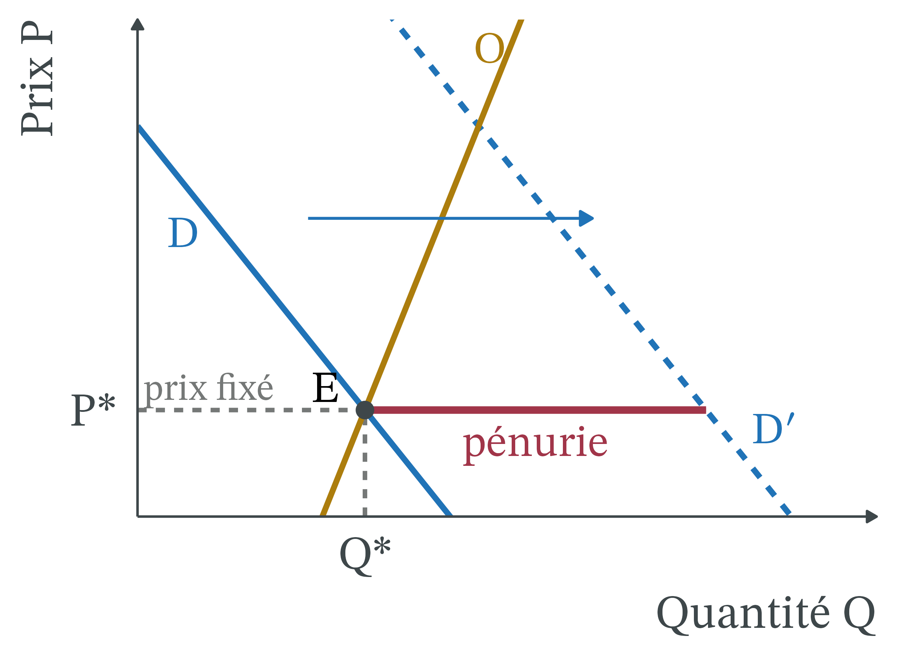
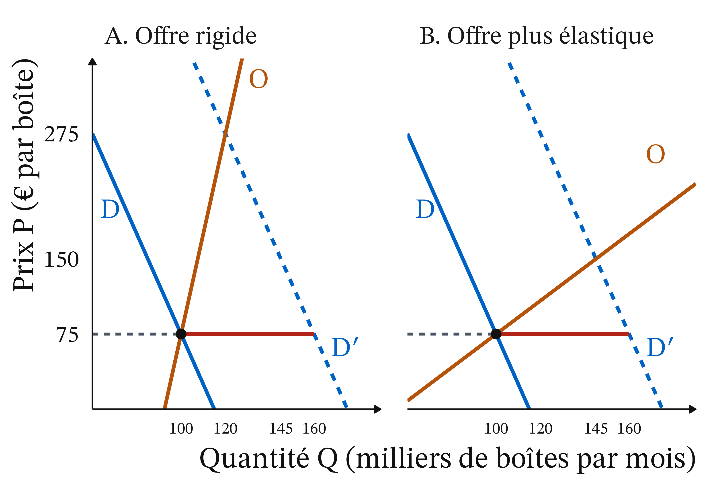
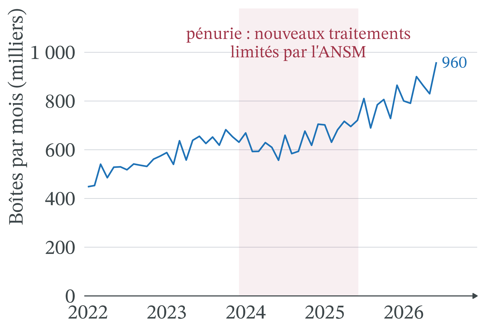
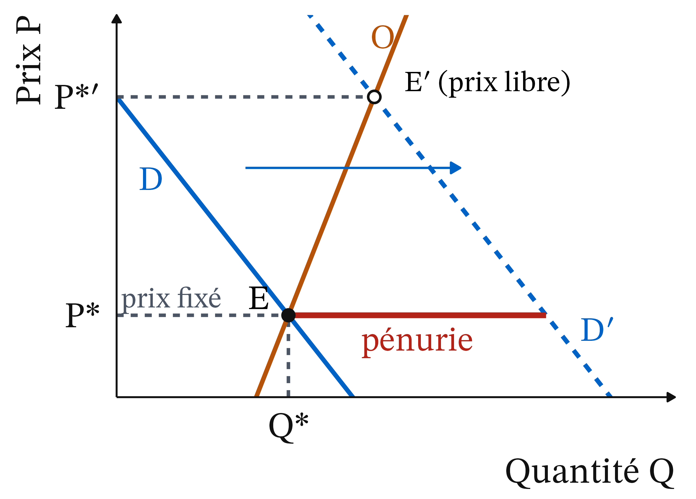
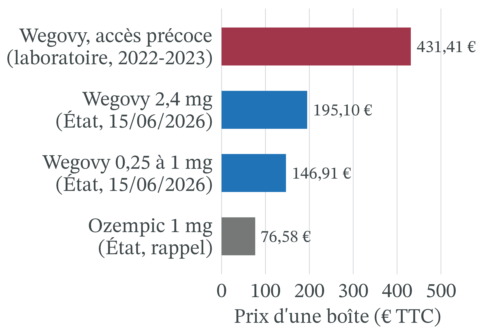
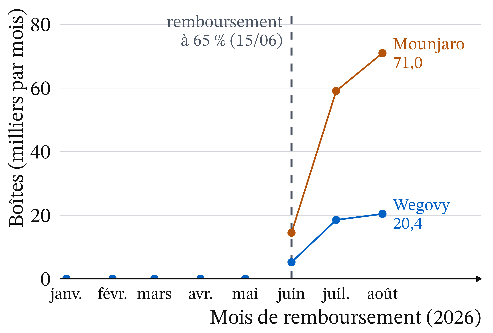

Cause officielle : « une augmentation importante de la demande mondiale », sur fond d’usage pour maigrir, que les industriels ne peuvent suivre « dans un temps restreint » (ministère de la Santé, JO du 21/05/2024).
En France, en décembre 2023, l’ANSM demande aux médecins de ne plus commencer de traitement par Ozempic, Victoza ou Trulicity ; le 14/03/2024, elle réserve les nouveaux traitements aux diabétiques de type 2 atteints d’une maladie des artères.
Le 05/06/2025 seulement, Ozempic et Victoza sont « de nouveau disponibles » (ANSM).
Un prix fixé par l’État : 76,58 € la boîte d’Ozempic 1 mg
Photo : HualinXMN, CC BY-SA 4.0, Wikimedia Commons (réduite)
Des règles médicales ont décidé qui serait soigné.
Même plus cher, pas tout de suite plus de stylos.
Question de la séance et trois outils pour y répondre
Question : pourquoi des diabétiques ont-ils manqué d’Ozempic, et pourquoi le prix n’a-t-il pas réglé la pénurie ?
Le prix administré : un prix fixé qui ne s’ajuste pas à la demande.
Le rationnement hors prix : une autre règle décide qui est servi.
La rigidité de l’offre : produire plus prend des mois ou des années.
Rappel (1/2) : équilibre, déplacement d’une courbe, élasticité-prix
Offre, demande, équilibre : la quantité offerte augmente avec le prix, la quantité demandée diminue ; au prix d’équilibre P*, elles sont égales (Q*).
Déplacement d’une courbe : si le prix du bien change, on glisse le long des courbes ; si une autre cause change (revenus, goûts, technique), la courbe entière se déplace (D → D′).
Élasticité-prix de la demande (e) : variation de Q en % divisée par la variation de P en %. Si |e| < 1, la demande est peu élastique.
Rappel (2/2) : brevet et asymétrie d’information
Brevet : droit exclusif d’exploiter une invention pendant 20 ans à compter du dépôt de la demande ; son titulaire peut alors être seul vendeur (monopole).
Asymétrie d’information : l’une des parties à un échange en sait plus que l’autre.
Le brevet explique pourquoi Ozempic, médicament récent, n’a qu’un fabricant, Novo Nordisk.
L’asymétrie d’information prépare l’analyse d’Arrow : le patient en sait moins que son médecin.
Prix administré : un prix fixé par une autorité publique
Définition 1 (Prix administré) Un prix administré est fixé par une autorité publique, et non par la rencontre de l’offre et de la demande. Il ne change que par une nouvelle décision.
En France, le prix d’un médicament remboursé est « négocié avec l’industriel », puis « fixé par le CEPS », le Comité économique des produits de santé, au vu notamment de son intérêt médical, du prix des médicaments comparables et des volumes de vente prévus (M. Coris et B. Bégaud, The Conversation, 02/06/2024).
Choc de demande : la courbe de demande se déplace, D → D′
Définition 2 (Choc de demande) Un choc de demande modifie la quantité que les acheteurs veulent acheter à chaque prix : la courbe de demande se déplace (D → D′). Un choc positif la déplace vers la droite.
Pour Ozempic : une demande mondiale en forte hausse, dans un contexte où des personnes non diabétiques le demandent pour maigrir (ministère de la Santé, 21/05/2024).
Ce second usage est un mésusage pour l’ANSM : un usage hors des indications autorisées.
Patients sous Ozempic, 2020-2024 : ×4,5 en France, ×7,2 aux États-Unis
De 2020 à 2024, patients sous Ozempic : ×4,5 en France, ×7,2 parmi les bénéficiaires de Medicare Part D.
Le même fabricant devait servir les deux marchés : le choc de demande est mondial.
Pénurie : au prix en vigueur, la demande dépasse l’offre
Définition 3 (Pénurie) Il y a pénurie quand, au prix en vigueur, la quantité demandée dépasse la quantité offerte. Elle se mesure par l’écart : quantité demandée − quantité offerte.
Sur un marché libre, le prix monterait et l’écart se refermerait.
Avec un prix administré, il demeure.
Un bien est rare dès qu’on ne peut pas en avoir autant qu’on veut gratuitement : tout médicament l’est.
Ozempic, fin 2023-juin 2025 : rare, et en pénurieau prix fixé. Seule la pénurie oblige à rationner autrement que par le prix.
Rationnement hors prix : file d’attente, critère, quota
Définition 4 (Rationnement hors prix) Quand le prix ne départage pas les acheteurs, une autre règle décide qui sera servi : c’est le rationnement hors prix.
la file d’attente : premier arrivé, premier servi ;
le critère : on sert d’abord ceux qui remplissent une condition, par exemple médicale ;
le quota, ou contingentement : chaque vendeur ou acheteur reçoit une quantité limitée.
Offre rigide : à court terme, la quantité offerte varie peu
Définition 5 (Offre rigide) L’offre est rigide quand la quantité offerte varie très peu avec le prix. À court terme, l’offre d’un médicament est rigide : produire plus exige des usines et des autorisations, qui prennent des mois ou des années. À long terme, elle devient plus élastique.
D’où le troisième fait : même en payant plus cher, le monde n’aurait pas eu tout de suite plus de stylos.
Arrow (1963) : les soins médicaux, un marché pas comme les autres
1996 · Linda A. Cicero / Stanford News Service, CC BY 3.0, Wikimedia Commons
Kenneth J. Arrow (1963), « Uncertainty and the Welfare Economics of Medical Care », American Economic Review · école néoclassique, économie de la santé. La maladie est imprévisible et le patient en sait beaucoup moins que son médecin : il ne choisit pas ses soins comme un bien ordinaire.
Les soins reposent donc sur l’assurance, la confiance et des règles collectives plutôt que sur le seul prix.
Trois traits de l’analyse d’Arrow dans le cas Ozempic
C’est le médecin qui demande. Sans ordonnance, pas de médicament : la demande passe par un tiers mieux informé que le patient.
Le patient ne paie pas tout le prix. L’Assurance maladie rembourse une partie, une complémentaire santé souvent une autre : le patient réagit peu au prix public.
La collectivité fixe des priorités. Service médical rendu jugé « modéré » par la HAS, d’où un taux de remboursement de base de 30 % (avis du 27/08/2025).
Remboursement observé en 2025 : 95,7 % de la base d’Ozempic
En 2025, l’Assurance maladie paie 95,7 % de la base de remboursement d’Ozempic, 98,4 % pour Trulicity, 98,2 % pour Victoza.
Le patient et sa complémentaire n’en paient que quelques pour cent.
Source : Assurance Maladie, Medic’AM mensuel, année 2025, pharmacies de ville ; part = montant remboursé ÷ base de remboursement (téléchargé le 22/10/2026).
Choc de demande sous prix fixé (1/4) : l’équilibre initial E
Au départ, le prix fixé P* est le prix d’équilibre.
Au prix P*, les vendeurs offrent Q* et les acheteurs demandent Q*.
Tout patient muni d’une ordonnance est servi (point E).
Choc de demande sous prix fixé (2/4) : la demande passe à D′
Le choc : la demande augmente à chaque prix ; la courbe passe de D à D′.
La courbe entière se déplace vers la droite.
L’offre O, raide, ne bouge pas : produire plus prend du temps.
Choc de demande sous prix fixé (3/4) : au prix P*, une pénurie
Le prix ne bouge pas : au prix P*, les vendeurs offrent toujours Q*.
Les acheteurs demandent beaucoup plus : c’est la pénurie (trait rouge).
Choc de demande sous prix fixé (4/4) : E′, l’équilibre d’un prix libre
Ce qui ne se produit pas : sur un marché libre à nombreux vendeurs, les acheteurs prêts à payer plus feraient monter le prix jusqu’à E′.
Ici, la pénurie dure tant que l’offre ne rattrape pas la demande, ou que la demande ne recule pas.
Chaîne de causalité d’une pénurie à prix fixé, appliquée à Ozempic

Choc : D → D′.
Prix fixé : il ne signale plus la rareté.
Offre rigide : quantité offerte proche de Q*.
Pénurie : rationner autrement que par le prix.
Règle médicale : le dossier décide, pas le revenu.
Exemple chiffré (1/6) : un marché de médicament fictif à l’équilibre
Marché fictif à nombreux vendeurs ; Q en milliers de boîtes par mois, P en euros par boîte ; prix fixé de 75 €, arrondi des 76,58 € réels.
Prix P (€ par boîte)
75
125
175
225
275
Demande avant le choc (D)
100
90
80
70
60
Demande après le choc (D′)
160
150
140
130
120
Offre à court terme (O)
100
105
110
115
120
1. L’équilibre initial : à 75 €, on demande 100 et on offre 100 : P* = 75 € et Q* = 100.
Exemple chiffré (2/6) : une demande très peu élastique, e ≈ −0,15
On compare deux points de la demande avant le choc (D), à 75 € et à 125 €.
Prix : de 75 € à 125 €, il monte de 50 ÷ 75 ≈ 66,7 %.
Quantité demandée : de 100 à 90, elle baisse de 10 %.
\(e = \dfrac{-10\ \%}{+66{,}7\ \%} \approx -0{,}15\) : |e| < 1, la demande est très peu élastique.
Exemple chiffré (3/6) : le choc crée une pénurie de 60 000 boîtes

Le choc : à chaque prix, D′ = D + 60.
La pénurie : le prix reste à 75 € ; on demande 160, on offre 100.
Il manque 60 milliers de boîtes, soit 60 ÷ 160 = 37,5 % des demandes.
Exemple chiffré (4/6) : à prix libre, le prix monte de 267 %
À 275 €, on demande 120 et on offre 120 (panneau A).
Prix +267 %, quantité +20 % seulement.
Sur 60 000 boîtes manquantes, 20 000 sont produites ; 40 000 patients renoncent, faute de payer 275 €.
Exemple chiffré (5/6) : la hausse du prix paie surtout la pénurie
On suppose ici que le patient paie tout le prix (médicament non remboursé).
Recette au prix fixé : 100 000 boîtes × 75 € = 7,5 millions d’euros par mois.
Recette à prix libre : 120 000 × 275 € = 33 millions d’euros.
La hausse paie surtout la pénurie, pas un effort de production.
S’il restait remboursé, l’Assurance maladie paierait l’essentiel de la hausse : la demande reculerait encore moins, et le prix devrait monter plus haut (déduction du modèle).
Exemple chiffré (6/6) : à long terme, l’offre devient plus élastique
Nouvelles usines : l’offre vaut toujours 100 à 75 €, mais 145 à 150 € (panneau B).
Offre rigide : libérer le prix change surtout qui est servi
Avec une offre rigide, libérer le prix fait apparaître peu de boîtes : il change surtout qui les reçoit, ceux qui peuvent payer.
À prix fixé, seul le déplacement d’une courbe referme la pénurie : une offre qui augmente (O → O′) ou une demande qui recule.
La pénurie française a pris fin alors que le prix restait administré. Le ministère signale « des investissements importants » des laboratoires, notamment à Chartres et à Fegersheim (réponse du 21/05/2024).
Exemple chiffré 2 (1/3) : 100 000 boîtes pour 160 000 demandes
On reprend la pénurie de l’exemple 1 : au prix fixé, une boîte par patient (chiffres fictifs).
Groupe
Demandes (milliers)
Diabétiques déjà traités (renouvellement)
80
Nouveaux diabétiques avec une maladie des artères
20
Autres nouveaux diabétiques
30
Demandes pour maigrir (hors indication)
30
Total
160
Trois règles à comparer : la file d’attente, le critère de l’ANSM, le prix libre.
Exemple chiffré 2 (2/3) : la file d’attente interrompt 30 000 traitements
Première règle : premier arrivé, premier servi ; les patients arrivent au hasard.
Chacun a 100 ÷ 160 = 62,5 % de chances d’être servi.
Diabétiques déjà traités : 80 000 × 0,625 = 50 000 boîtes en moyenne.
30 000 d’entre eux voient leur traitement interrompu.
Exemple chiffré 2 (3/3) : le critère médical n’interrompt aucun traitement
Critère de l’ANSM : d’abord les patients déjà traités (80 000), puis les nouveaux diabétiques avec une maladie des artères (20 000) : 80 000 + 20 000 = 100 000.
Les demandes hors indication n’obtiennent rien.
Prix libre : à 275 €, 120 000 boîtes vont à ceux qui acceptent ce prix ; rien ne garantit que ce soient les plus malades.
« Le critère médical a supprimé la pénurie. » Ce raisonnement est faux.
Il manque toujours 60 000 boîtes ; la règle décide seulement qui subit la pénurie.
Chronologie (1/2) : du gel des nouveaux traitements au contingentement
Septembre 2022 : premières recommandations de l’ANSM aux médecins, actualisées en mars et décembre 2023.
Décembre 2023 : ne plus commencer de traitement par Ozempic, Victoza, Trulicity.
14/03/2024 : nouveaux traitements réservés aux diabétiques de type 2 avec maladie des artères avérée ; sinon, une autre classe d’antidiabétiques « à privilégier ».
Septembre-octobre 2024 : reprise progressive des nouveaux traitements, sous contingentement.
Chronologie (2/2) : encadrement du remboursement, puis fin de la pénurie
01/02/2025 : remboursement subordonné à un formulaire du médecin (âge, diabète de type 2, traitement seul ou associé), toléré jusqu’au 01/09/2025.
05/06/2025 : Ozempic et Victoza de nouveau disponibles pour tous ; Trulicity reste en distribution fractionnée.
Fin « des tensions d’approvisionnement » sans que le prix ait servi : compatible avec un déplacement de l’offre (O → O′), sans que les sources séparent offre et demande.
Boîtes remboursées par mois : plateau pendant le rationnement, reprise ensuite

Octobre 2023 à septembre 2024 : 7,46 millions de boîtes, +3,8 % sur un an.
Octobre 2024 à septembre 2025 : 8,43 millions, +13,1 %.
Juin 2026 : 959 502 boîtes ; la hausse continue après la fin des tensions.
Source : Assurance Maladie, Medic’AM mensuel, janvier 2022 à juin 2026, analogues du GLP-1 du diabète, pharmacies de ville ; zone rouge : ANSM, de décembre 2023 au 05/06/2025 (téléchargé le 22/10/2026).
Point d’attention : les boîtes délivrées ne mesurent pas la demande
Pendant une pénurie, on observe la quantité vendue : la plus petite des deux, quantité demandée ou quantité offerte.
Le plateau de 2024 est compatible avec une quantité bloquée par l’offre, sans le prouver.
Une baisse de la demande donnerait le même chiffre.
Prix moyen d’Ozempic : stable alors que les boîtes sont multipliées par 4,9

De 2020 à 2024 : de 0,75 à 3,64 millions de boîtes (×4,9).
Prix moyen : de 80,0 € à 77,8 € (−2,7 %).
Le prix administré n’a pas répondu au choc de demande, comme P* sur le graphique théorique.
Prix plafond (1/2) : un modèle proche, dont Ozempic s’écarte
Prix plafond : un prix maximum fixé par l’État ; il crée une pénurie quand il est fixé sous l’équilibre, sur un marché à nombreux vendeurs (CM 4).
Un prix négocié, pas un plafond : un seul fabricant, Novo Nordisk ; le prix n’est pas trop bas par décision, il l’est devenu quand la demande a bondi.
Une offre mondiale et rigide : un prix français plus élevé aurait peut-être attiré des stylos, aux dépens d’autres pays.
Prix plafond (2/2) : le modèle éclaire le mécanisme, pas la cause
Une demande qui passe par le médecin et l’assurance : elle dépend des prescriptions et du remboursement plus que du prix public.
Le prix n’était pas la cause principale, selon l’État : le ministère invoque un choc de demande mondiale face à des capacités limitées.
Le modèle explique pourquoi une pénurie dure à prix fixe, et pourquoi il faut alors rationner autrement.
Il ne permet pas de conclure qu’un prix plus élevé aurait évité la pénurie d’Ozempic.
Wegovy depuis le 15/06/2026 : prix fixé par l’État, 146,91 à 195,10 €

Avant : vendu sans remboursement depuis l’automne 2024, à un prix non publié.
Accès précoce (2022-2023) : 431,41 € par stylo, demandés par le laboratoire.
Le prix fixé par l’État est 2,2 à 2,9 fois plus bas.
Wegovy et Mounjaro : aucune boîte remboursée avant juin, puis une hausse rapide

Août 2026 : 20 416 boîtes de Wegovy et 70 996 de Mounjaro, contre 483 620 d’Ozempic.
Mounjaro mêle obésité et diabète de type 2.
Source : Assurance Maladie, Medic’AM mensuel, janvier à août 2026, pharmacies de ville ; juin : 15 jours de remboursement (téléchargé le 22/10/2026).
Méthode : refaire le raisonnement sur Wegovy et Mounjaro (2026)
Depuis le 15/06/2026, Wegovy et Mounjaro sont remboursés à 65 % aux adultes dont l’IMC est d’au moins 40, ou 35 avec une maladie associée ; Mounjaro aussi dans le diabète de type 2 (arrêtés du 10/06/2026, JO du 12/06/2026).
Le choc. Le remboursement baisse le prix payé, pas le prix public : la demande se déplace-t-elle vers la droite ? Le zéro d’avant juin mesure-t-il la demande ?
L’offre. Peut-elle suivre ? Que faudrait-il observer ?
Le rationnement. Si la demande dépasse l’offre au prix fixé, quelle règle décide ? La règle de première ordonnance en est-elle une ?
Effets de répartition (1/3) : par état de santé et par revenu
Par état de santé : avec la règle de l’ANSM, les patients déjà traités gardent leur traitement. Perdent : les nouveaux patients sans maladie des artères, orientés vers une autre classe d’antidiabétiques, et les demandes hors indication.
Par revenu : à 275 € la boîte payés par le patient, un patient modeste renonce avant un patient aisé, à besoin égal. Prix administré et critère médical rendent l’accès indépendant du revenu pour les ayants droit.
Effets de répartition (2/3) : par territoire et par génération
Par territoire : le contingentement répartit les boîtes entre pharmacies ; un patient peut trouver son traitement dans une officine et pas dans une autre. Aucune source ouverte pour cette séance ne chiffre ces écarts.
Les investissements à Chartres et à Fegersheim augmentent l’offre et l’activité de ces territoires.
Par génération : effet non chiffré. Par déduction, le critère protège les patients installés depuis plus longtemps dans la maladie, au détriment des nouveaux.
Effets de répartition (3/3) : le vendeur privé de la rente de pénurie
Le fabricant vend toute sa production au prix fixé, sans profiter de la pénurie.
Prix libre : recette de 7,5 à 33 millions d’euros par mois, pour 20 % de boîtes en plus.
Ce gain dû au seul manque, la rente de pénurie, reste aux acheteurs.
Controverse (1/2) : payer les médicaments plus cher contre les pénuries
Analyse positive (ce qui est : mécanismes et effets, vérifiables)
À court terme, avec une offre rigide, un prix plus élevé fait peu produire : il rationne surtout par la capacité à payer.
À long terme, sur les médicaments anciens, « la politique du prix toujours plus bas prévaut » et « accentue la dépendance et le risque de pénuries » (Coris et Bégaud, 02/06/2024).
Le prix ne suffit pas : Suisse et Allemagne, à prix supérieurs, connaissent aussi des pénuries (rapporteure du Sénat, 06/07/2023).
Controverse (2/2) : qui servir, combien payer, quelle liberté de prescrire
Analyse positive (ce qui est : mécanismes et effets, vérifiables) : le mécanisme de la pénurie à prix fixé est admis par tous.
Analyse normative (ce qui devrait être : dépend de jugements de valeur)
Qui servir d’abord ? Les plus malades, les premiers arrivés, ou ceux qui paient le plus ?
Combien payer ? Un prix plus élevé coûte à l’Assurance maladie et aux patients, pour un effet incertain à court terme.
Quelle liberté pour le médecin ? Encadrer la prescription, au risque de limiter la liberté de prescrire ?
Écoles en présence : l’offre de demain contre l’accès aux soins
Les deux camps partent du même cadre néoclassique et divergent sur le poids des défaillances de marché en santé.
Approche par le marché : le prix est un signal ; un prix bas décourage l’investissement et prépare les pénuries de demain ; on aide ensuite les plus modestes par l’assurance ou des transferts.
Économie de la santé, issue d’Arrow : des priorités médicales fixées collectivement servent mieux les patients qu’un prix libre.
Droit : un remboursement subordonné aux indications de la prescription
Le remboursement d’Ozempic, de Victoza et de Trulicity est « subordonné au renseignement par le prescripteur d’éléments relatifs aux circonstances et indications de la prescription » (Code de la sécurité sociale, art. L162-19-1, selon Vidal, 16/01/2025). Règle appliquée depuis le 1er février 2025.
Le droit agit ici sur la demande remboursée, non sur le prix.
À retenir
Un prix administré ne s’ajuste pas : si D → D′, la pénurie demeure.
Quand le prix ne départage plus les acheteurs, il faut rationner : file, critère médical ou quota.
La règle décide qui subit la pénurie : l’ANSM a protégé les patients déjà traités.
Offre rigide : libérer le prix change surtout qui est servi ; seul un déplacement de courbe referme la pénurie.
Les soins médicaux ne sont pas un marché ordinaire (Arrow, 1963).
Le modèle du prix plafond a des limites pour Ozempic.
Plan de dissertation : ce que dit l’outil, ce qu’il ne tranche pas
Sujet : faut-il payer les médicaments plus cher pour éviter les pénuries ?
I. Ce que dit l’outil (positif)
A. Choc de demande sous prix fixé : la pénurie demeure, il faut rationner hors prix.
B. Offre rigide : un prix libre rationne surtout par la capacité à payer.
II. Ce qu’il ne tranche pas (normatif)
A. Qui servir d’abord, combien payer, quelle liberté de prescrire.
B. Marché ou économie de la santé : l’offre de demain ou l’accès aux soins.